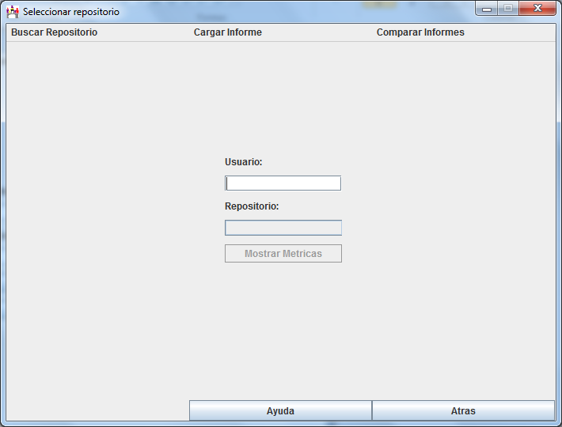

En esta apantalla aparece un campo de texto para introducir el nombre de un usuario cualquiera registrado en la plataforma para obtener los repositorios de los que es propietario y cargarlos en la lista una vez que se pulsa "enter".
El botón "Mostrar Métricas" carga la pantalla resultados para mostrar las métricas calculadas para el repositorio seleccionado.
